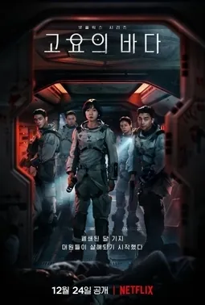

The genetics
The available sources describe the series' central biological element only in general terms. The sample kept at the lunar research station, 'lunar water', is a new substance that multiplies like a virus once it touches living cells, and its handling at the station caused the deaths of the entire staff, after which the authorities covered up the incident and sent a new crew without telling them the truth. Luna 073, the superhuman girl who survived and is immune to the substance, is the other mystery of the station, but the sources do not explain her origin or whether she resulted from experiments. The series thus frames the station's research as a secret, deadly project hidden by officials; the sources say nothing about genetic engineering or cloning, so any genetic dimension of the story cannot be confirmed from them.
How genetics is portrayed
- Overall portrayal of genetics
- negative The research is a deadly secret hidden by deceitful authorities and uncovered by the protagonist; the sources give no counterweight.
- Outcome of the genetic intervention
- negative The lunar-water research killed the station's entire staff and endangers the new crew.
- Balhae Station researchers and the space administration
- villain Aim: not stated (not applicable). The station researched the virus-like lunar water, which killed all 117 staff; the administration then hid the circumstances and sent a new team with lies and half-truths. The sources do not say what the research was for; the framing rests on the cover-up the protagonist uncovers.
The story
On a near-future Earth ravaged by desertification, drinking water is strictly rationed. A hand-picked team led by Captain Han Yun-jae, a space-agency soldier, is sent to the Moon to retrieve a mysterious sample from Balhae Station, a lunar research base abandoned five years earlier after an incident that killed all 117 people on board, whose circumstances were kept secret. The astrobiologist Song Ji-an joins the mission to learn the truth about the death of her sister, the station's chief researcher. At the station she discovers that their superiors have told the team half-truths and lies. The sample proves to be 'lunar water', a new substance that looks like water but multiplies like a virus when it comes into contact with living cells such as human blood. The crew are attacked by Luna 073, a violent superhuman girl who survived the incident and is immune to the lunar water, while some team members hide ulterior motives.